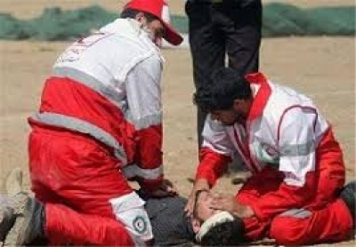
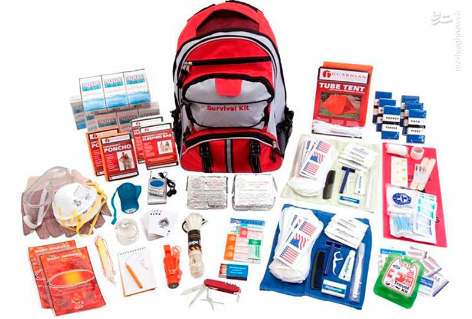
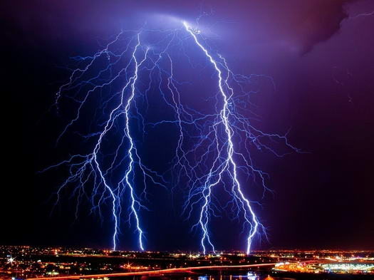
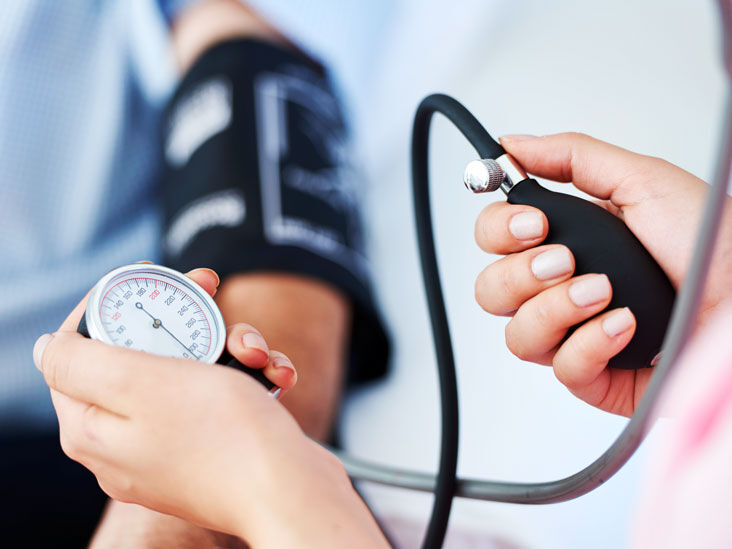

کمک های اولیه

کمک های اولیه چیست؟
کمک های اولیه مراقبت های خیلی فوری است و اقداماتی که بلافاصله پس از وقوع حادثه و پیش از رسیدن اورژانس و رسیدن به مراکز درمانی برای آسیب دیده که دچار بیماری یا سانحه ناگهانی شده است، انجام می شود.
دانستن کمک های اولیه برای همه لازم است؛ حتی اگر کسی مایل نباشد در موقعیتی پرتنش قرار بگیرد تا آن را به کار بندد. البته این مهارت به هیچ وجه جای مراقبت های پزشکی را نمی گیرد، ولی تا رساندن مصدوم به مرکز درمانی می تواند سودمند باشد و اگر به درستی انجام شود، به خوبی می تواند فاصله بین مرگ و زندگی، بهبود سریع و بستری درازمدت، یا معلولیت و آسیب گذرا را به ما نشان دهد.
اگر در حادثه بتوانید تشخیص دهید که اورژانس جدی پزشکی رخ داده است و بدانید چگونه از کمک و خدمات دیگران بهره ببرید، می توانید در نجات افراد از مرگ حتمی نقش داشته باشید. البته اگر خود مصدوم و همراهان وی نشانه های اولیه را ندانند، تشخیص میسر نمی شود. بیشتر مردم کمک های اولیه را نمی دانند و ممکن است با ندانم کاری وضعیت اضطراری را وخیم تر کنند.
ویژگی های مهم کمک های اولیه
• کمک به بهبودی وضع بیمار؛
• تسریع در روند بهبودی؛
• کاهش آسیب و صدمات بیمار؛
• تسریع در انتقال به مراکز درمانی.
ویژگی های مهم امدادگر
• خونسردی؛
• سرعت عمل؛
• آگاهی داشتن؛
• مهارت؛
• احترام به افکار و عقاید ملیت ها و اقوام؛
• نظم و انضباط.
کمک های اولیه در خانواده
تجهیزاتی که امدادگر باید در کیف کمک های اولیه داشته باشد
• دستکش لاتکس؛
• ماسک؛
• باند معمولی؛
• قیچی؛
• پنس؛
• ترمومتر (تب سنج)؛
• بتادین؛
• پنبه؛
• گاز استریل؛
• قرص مسکن و... .
در هر خانه ای باید یک کیف نجات وجودداشته باشد که در صورت وقوع بالایی طبیعی (سیل، زلزله و...) ساکنان خانه این کیف را بردارند و از خانه خارج شوند.
محتویات کیف نجات:
1. کیف کمک های اولیه؛ 2. کپی از همه مدارک شخصی افراد خانواده و دیگر اسناد و مدارک باارزش؛ 3. مواد غذایی کم حجم و پرکالری؛ 4. آب؛ 5. لباس گرم و پتو؛ 6. چرا قوه؛ 7. داروهای مورد نیاز افراد خانواده؛ 8. رادیو؛ 9. سوت؛ 10. اگر کودک دارید، عروسک یا ماشین از میان اسباب بازی های او برای آرام کردنش.
رضایت پیش شرط درمان است و امدادگر باید پیش از انجام کمک های اولیه رضایت مصدوم را جلب کند.
ابراز رضایت توسط بیمار: از فرد بیمار هوشیار که به سن قانونی رسیده است باید اجازه گرفت. باید به مصدوم نام خود را بگویید و نیز توضیح دهید که برای انجام کمک های اولیه آموزش دیده اید و می خواهید به او کمک کنید. اجازه از طرف مصدوم به صورت لفظی یا به صورت اشاره سر قابل قبول است.
رضایت ضمنی: هنگامی که مصدوم بیهوش و در شرایطی باشد که جان او در خطر است، رضایت ضمنی کافی است. برای مصدومی که پاسخ نمی دهد یا هنگامی که دستش را برای دریافت کمک دراز می کند، فرض بر این است که وی به کمک های نجات بخش رضایت داده است. همچنین هنگامی که جان کودکی در خطر است و والدین یا اولیای قانونی وی برای رضایت دادن حضور ندارند، کمک های اولیه براساس رضایت ضمنی ارائه می شود و نباید برای گرفتن رضایت از والدین وی انجام خدمات را به تاخیر انداخت.
کسی را که نجات می دهید، ممکن است همان کسی باشد که دوستش دارید.
مواردی که باید قبل از اقدام به کمک انجام بدهیم
Stop
S (stop): برنامه ریزی کردن
T (think): مشاهده کردن
O ( observe): فکر کردن
P (planning): ایست اولیه
ارزیابی/ سنجیدن:
1. ارزیابی صحنه:
• خطرات (انفجار، تصادف، سقوط، ریزش آوار، خفگی و...)؛
• موقعیت صحنه؛
• ایمنی (ایجاد ایمنی با دوک خطر، پرچم قرمز و...)؛
• تعداد مصدومان؛
• تمام با اورژانس.
2. ارزیابی مصدوم: رهگذر یا ناظر صحنه باید دریابد که آیا شرایط مصدوم تهدیدکننده حیات است و اینکه مصدوم به چه نوع کمکی نیاز دارد.
کمک های اولیه در خانواده
تلفن های اضطراری
• اورژانس 115
• آتش نشانی 125
• هلال احمر 112
• پلیس 110
چگونه می توانید اورژانس را خبر کنید
هنگامی که با اورژانس (115) تماس می گیرید، مسئول مربوط از شما اطلاعات زیر را می پرسد. پس در هنگام دادن اطلاعات آرام، شمرده و واضح صحبت کنید.
1. نام و شماره تلفنی که شما از آن تماس می گیرید: این کار جلو تماس های دروغین را می گیرد و اگر تماس قطع شد یا اطلاعات دیگری نیاز بود، مرکز مخابرات 115 می تواند با شما تماس بگیرد.
2. محل فعلی مصدوم: در صورت امکان آدرس و نام تقاطع خیابان ها و دیگر نشانی های مربوط به محل را بگویید. همچنین نشانی دقیق مصدوم را اطلاع دهید، برای مثال در زیرزمین ساختمان.
3. چه پیش آمده است: ماهیت وضع اضطراری را بیان کنید؛ برای مثال همسرم از یک نردبان افتاده است و حرکت نمی کند.
تعداد و جنسیت اشخاصی که نیاز به کمک دارند و هرگونه شرایط ویژه دیگر، به عنوان مثال کودک، باردار، مسن و... را بگویید.
شرایط مصدوم، برای مثال از سر همسرم خون می آید. هرگونه کمکی را که شما به مصدوم کرده اید، بیان کنید، مانند فشار دادن محل خونریزی.
تا زمانی که مسئول مربوط به شما نگفته است، گوشی را نگذارید. ممکن است او به شما بگوید که برای مراقبت از مصدوم بهترین کار چیست. اگر کسی دیگر را برای تلفن کردن فرستادید، از او بخواهید دوباره به شما خبر دهد تا شما از تماس او با اورژانس مطمئن شوید.
احتیاط در موارد بیماری
هر چند بیماری های عفونی ممکن است جزیی باشد، اما امدادرسان باید از خطر بیماری های عفونی آگاه باشد؛ زیرا در برخی موارد این خطرات ممکن است تهدیدکننده حیات باشد. گرچه احتمال سرایت بیماری از یک مصدوم بسیار کم است، اما یک امدادگر باید بداند چگونه خودش را از بیماری هایی که از راه خون یا هوا منتقل می شود، حفظ کند. این اقدامات حفاظتی می تواند او را در برابر بیماری های عفونی ویروسی یا باکتریایی محافظت کند.
بیماری های منتقل شونده از راه خون
ویروس هپاتیت B (HPV)، ویروس هپاتیت C (HCV) و ویروس تضعیف کننده سیستم ایمنی انسان (HIV).
بیماری های منتقل شونده از راه هوا
میکروب های آلوده کننده ای همچون باکتری ها یا ویروس ها که با ذرات ترشحات مخاطی از طریق سرفه یا عطسه در هوا پخش می شود را منتقل شونده از راه هوا می نامند، مانند بیماری سل.
کمک های اولیه در خانواده
حفاظت های عمومی
بنابراین امدادگران باید با فرض این که تمام خون ها و مایعات و ترشحات بدن فرد مصدوم عفونی و آلوده است، راهکارهای ایمنی را به کار ببندند و اقدامات حفاظتی مناسب را در برابر آن انجام دهند. در صورت امکان برای محافظت، از دستکش و ماسک جراحی استفاده کنید.
هنگام وقوع زلزله، بهمن و صاعقه چه کنیم؟
زلزله: آوار را از روی افراد آرام آرام برداریم. خونسردی خود را حفظ کنیم. آب به افراد مصدوم ندهیم. از روی آوار راه نرویم. از زدن کلید برق و موبایل بپرهیزیم و از چراغ قوه استفاده کنیم.
بهمن: شیب کوه بیش از 30 درجه و کمتر از 60 درجه است. به صورت اریب عبور کنیم. روی جای پای دیگری قدم بگذاریم. صدای بلند تولید نکنیم.
صاعقه: کنار تیر برق نباشیم. به صورت چمباتمه بنشینیم (زانوها را خم کنیم؛ سر را بین زانوها قرار دهیم و دو دست را روی سر بگذاریم).
انواع فشار خون:
فشاری که خون به دیواره رگ (شریان یا سرخ رگ) و رگ به خون وارد می کند را فشار خون می گویند.
1. فشار خون بالا (سیستول) max: فشار خون رگ؛
2. فشار خون پایین (دیاستول) min: فشار رگ به خون
نبض های مهم بدن
1. نبض رادیال (مچ دست): معمول ترین؛
2. نبض کاروتید (گردنی)؛
3. نبض براکیال (بازویی)؛
4. نبض فمورال (کشاله ران)؛
5. نبض بتیان (قوزک پا)؛
6. نبض دورسالیس (برآمدی پا یا مسح پا)؛
7. نبض چین آرنج دست؛
8. نبض گیج گاهی (شقیقه ها)؛
9. نبض پشت زانو.
زمان طلایی
برای کمک رسانی به مصدوم چهار تا شش دقیقه است. بدن چهار تا شش دقیقه بدون تنفس زنده می ماند. بعد از یک دقیقه بیهوش می شود. از شش دقیقه تا ده دقیقه بعد دیگر اکسیژن به مغز نمی رسد و دچار مرگ مغزی می شود.